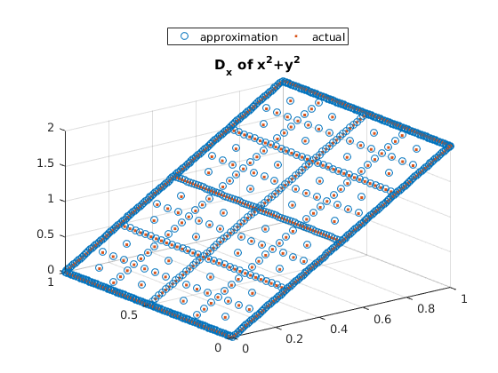
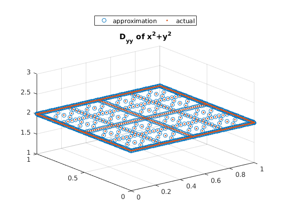
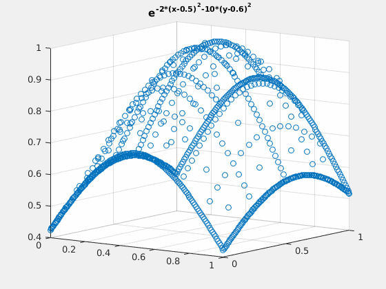
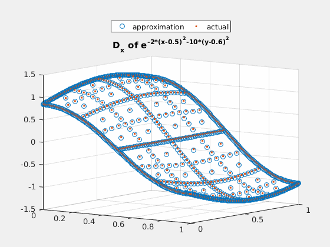
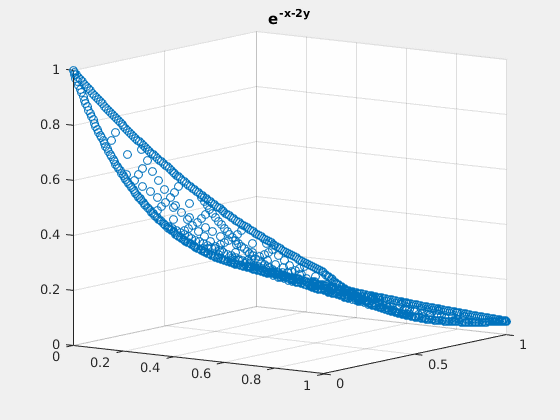
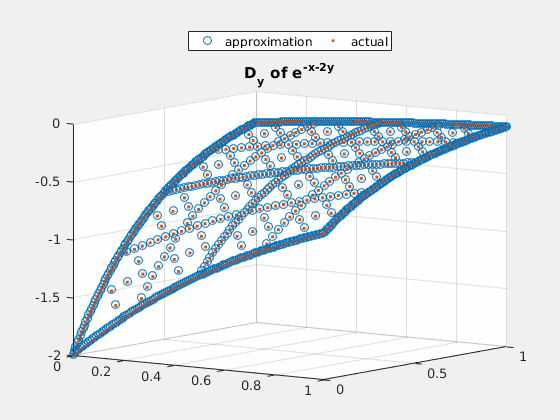
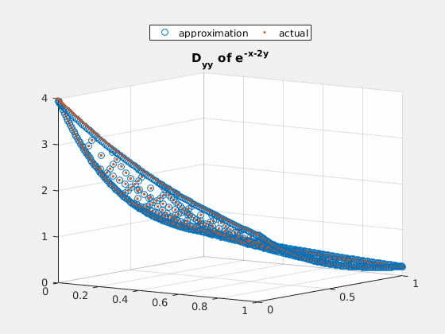

Example file showing how the difference operators for sparse grid behave
by SeHyoun Ahn, July 2016
Contents
Requires: <generate_spgrid.m> <gen_diff_op.m> <grid_evaluation.m>
Once the grid is built and the difference operators are computed, computing the approximation for the derivative values become straight forward. The procedure become
- Compute the Nodal values
- Change basis to Hierarchical Values
- Apply the Difference Operators (found for the given grid) to compute Derivative Values
Grid Set-up
Grid parameters
n_dim = 2; n_levels =7; % Generate Grid % by default the grid is set up over $ [0,1]^n $ [spgrid,spspace] = generate_spgrid(n_dim,n_levels); % Setup Change of basis from Hierachical to Nodal hier_to_nodal = grid_evaluation(spgrid,spgrid,spspace); % Difference Operator [forward_diff_x,backward_diff_x] = gen_diff_op(1,spgrid,spspace,min(spspace(:,1))); [forward_diff_y,backward_diff_y] = gen_diff_op(2,spgrid,spspace,min(spspace(:,2))); % Second Order Difference Operator % This is one difference scheme of many to get second order difference fb = forward_diff_y*(hier_to_nodal\backward_diff_y); bf = backward_diff_y*(hier_to_nodal\forward_diff_y); second_deriv_y = (fb+bf)/2; second_deriv_y(spgrid(:,2)==1,:) = fb(spgrid(:,2)==1,:); second_deriv_y(spgrid(:,2)==0,:) = bf(spgrid(:,2)==0,:); % Integration Weights int_weight = (prod(spspace,2)./2.^sum(spspace==1,2))';
Example 1: $ x^2 + y^2 $
close all; % Compute Nodal Values v=spgrid(:,1).^2+spgrid(:,2).^2; % Change to Hierarchical Values v_basis = hier_to_nodal\v; figure(1); % Use the Difference Operator to Compute forward Difference scatter3(spgrid(:,1),spgrid(:,2),forward_diff_x*v_basis); hold on; scatter3(spgrid(:,1),spgrid(:,2),2*spgrid(:,1),'.'); title('D_x of x^2+y^2'); legend('approximation','actual','location','northoutside','Orientation','horizontal'); figure(2); % Use Difference Operator to Compute Second Order Difference scatter3(spgrid(:,1),spgrid(:,2),second_deriv_y*v_basis); hold on; scatter3(spgrid(:,1),spgrid(:,2),2.*ones(size(spgrid(:,1))),'.'); title('D_{yy} of x^2+y^2'); legend('approximation','actual','location','northoutside','Orientation','horizontal'); 
Example 2: $ e^{-2\cdot (x-0.5)^2-(y-0.6)^2} $
close all; v = exp(-2*(spgrid(:,1)-0.5).^2-(spgrid(:,2)-0.6).^2); v_basis = hier_to_nodal\v; true_deriv = exp(-2*(spgrid(:,1)-0.5).^2-(spgrid(:,2)-0.6).^2).*(-4).*(spgrid(:,1)-0.5); h = figure(1); scatter3(spgrid(:,1),spgrid(:,2),v); title('e^{-2*(x-0.5)^2-10*(y-0.6)^2}'); gif_maker_rotate('fig2_1.gif',h); h = figure(2); scatter3(spgrid(:,1),spgrid(:,2),forward_diff_x*v_basis); hold on; scatter3(spgrid(:,1),spgrid(:,2),true_deriv,'.'); title('D_x of e^{-2*(x-0.5)^2-10*(y-0.6)^2}'); legend('approximation','actual','location','northoutside','Orientation','horizontal'); gif_maker_rotate('fig2_2.gif',h); 
Example 3: $ e^{-x-2\cdot y} $
close all; v = exp(-spgrid(:,1)-2*spgrid(:,2)); v_basis = hier_to_nodal\v; true_deriv = exp(-spgrid(:,1)-2*spgrid(:,2))*(-2); true_2deriv = exp(-spgrid(:,1)-2*spgrid(:,2))*4; h = figure(1); scatter3(spgrid(:,1),spgrid(:,2),v); title('e^{-x-2y}'); gif_maker_rotate('fig3_1.gif',h); h = figure(2); scatter3(spgrid(:,1),spgrid(:,2),forward_diff_y*v_basis); hold on; scatter3(spgrid(:,1),spgrid(:,2),true_deriv,'.'); title('D_{y} of e^{-x-2y}'); legend('approximation','actual','location','northoutside','Orientation','horizontal'); gif_maker_rotate('fig3_2.gif',h); h = figure(3); scatter3(spgrid(:,1),spgrid(:,2),second_deriv_y*v_basis); hold on; scatter3(spgrid(:,1),spgrid(:,2),true_2deriv,'.'); title('D_{yy} of e^{-x-2y}'); legend('approximation','actual','location','northoutside','Orientation','horizontal'); gif_maker_rotate('fig3_3.gif',h);  